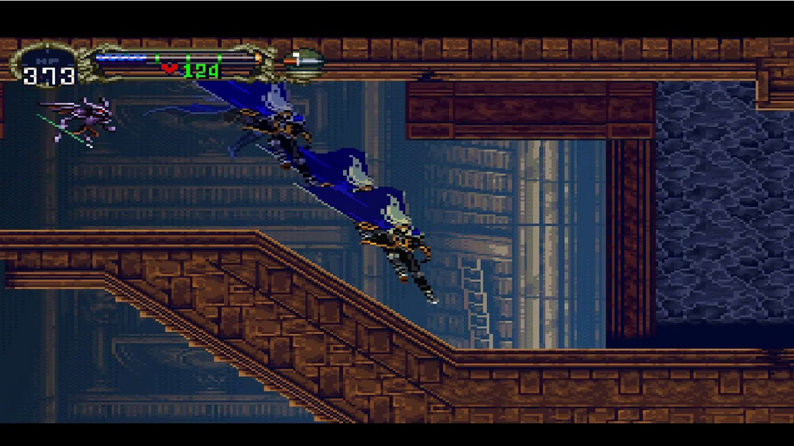

Why are video games interesting? What makes video games so attractive?
Written by Louis Chan
Video games have been in existence for more than 30 years.
Starting in the 80s, video games kept evolving along with the platforms, and every evolution was a huge success in both business and popularity; no matter which type was existing, or what platform they were using, video games are usually popular with the market and the public.
With a short but rich history of development, video games are influencing the world by their diversification such that they can reflect histories, present different cultural phenomena, even provide prospects to the future of the world visually. The expansive content span of video games can build collective connections worldwide. Therefore, people are seeing video games as a common topic, which can cross cultures and races.
Video games became more advanced interactive entertainment today, and a lot of people are playing it in a normal relaxed way. Either the PC platform or the mobile phone platform, markets of video games grow enormously along with the increased amounts of players. It shows that more people are finding video games interesting to play and able to bring enjoyment. Some people even award video games as special and modern art. All those compliments started when more people found video games attractive.
However, most people who play video games never thought about why they want to play them; they did not seek the reason for video games being attractive to them. With the influence of video games getting broader at present, there is a necessity to look deep into the reason behind video games’ attractiveness.
Emotional experience makes video games attractive

Emotional attachment is an indispensable part of video games to provide a virtual experience to let people escape from reality. With this purpose, emotional experience is becoming an important consideration while designing games. By defining natural and complicated interactive emotions, different ways to design the elements that are being able to provide immersive emotional experiences in video games’ frameworks were discovered to create emotional engagements for the players.
Players can easily immerse themselves into a video game while they are generating an emotional response to it. Thus, most of the attractive video games today are focusing on leading players to generate emotions with finely designed elements.
Since emotional experience is essential to let the players immerse themselves in the gameplay, there are a few strategies being used in the design process on emotions of video games:
- Fluent — The design process on emotions should be smooth.
- Real —— It is necessary to let players believe the emotions they generated were real.
- Strong Feedback —— Players should feel the emotions strongly.
The sense of emotions can create a strong connection between the players’ minds and unrealistic scenes, stories, and characters. Only when players get into the mental flow during the gameplay, they can have a profound experience by going through the carefully designed level of emotion proximity on elements like the narrative, NPCs, etc.
Therefore, the emotion triggers designed by video games should be smooth enough to let the players experience the natural flow of emotions without realizing those were intently designed by the game. Also, this lets players realize the emotions they have generated as a reaction to the gameplay, creating long-lasting memories that are implanted in their minds. Furthermore, the players can receive strong feedback from the gameplay by recalling the memory, and they will have a slight illusion about what they had experienced as true.
Using emotions to strengthen the interactivity of video games is one of the reasons that makes it attractive to people.